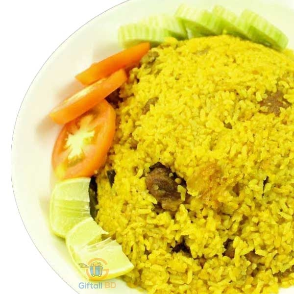

Here is the recipe of Bangali Food "Khicuri"

The dish involves roasting shona mug dal, a variant of moong dal and dry frying of raw rice separately before cooking both these ingredients together with vegetables and spices.
Ingredients
- 2 cups Gobindobhog rice
- 2 cups of split moong dal (shona mug dal)
- 1 bowl of cauliflower florets chopped in bigger sizes
- 2 medium or large sized potatoes
- 3 tablespoons of mustard oil
- 1 tablespoon of desi ghee
- Whole garam masala for tempering
- 1 teaspoon of whole cumin seeds
- 1 inch ginger finely chopped or ground to a paste
- 1/2 tablespoon of turmeric powder
- 1/2 tablespoon of cumin powder
- 1 teaspoon of coriander powder
- 2 green chilies
- 2 medium tomatoes chopped quarterly
- 1 tablespoon of sugar
- salt to taste
- 15 to 20 cups of hot water
Step 1: Preparation (15 minutes)
The preparation for a Bengali khichdi involves getting the right amount of rice and dal and ensure the right cuts of vegetables.
Measuring the Rice and Dal
Ensure that you properly measure the rice and the dal. It should always be equal in portion. So if you take one cup of gobindobhog rice, you should take one cup of shona mug dal.
Measuring & Chopping the Vegetables
You can use any vegetables you wish. A bengali khichdi, however, predominantly uses potatoes and cauliflower florets. You can cut the potatoes in halves, which means one potato will serve two persons. Cut the cauliflower florets in bigger sizes, because you would not want the cauliflower florets to melt in the khichuri and reduce itself to a mash.
Step 2: Wash the rice and dry it (5 minutes)
Wash the rice in water for a few times. This is to ensure that all the dirt and starch are removed. After you have washed the rice, spread it on a plate big enough and allow the rice to dry. Since we will dry roast the rice later, it is important to ensure that there is no moisture in the rice. You can also keep the rice under a ceiling fan to speed up the process.
Step 3: Roast the dal (5 minutes)
Dry roast the dal in a kadai for a three to four minutes
Step 4: Wash the dal (2 minutes)
Wash the dal only once under cold water. Remember to not over wash the dal as it will undo the hard work you did previously while roasting it. Over washing the dal will remove its nutty flavor.
Step 5: Fry the raw rice (5 minutes)
In a kadai, pour the rice and dry roast it for 5 minutes using a spatula. With time the rice will have a transparent feel to itself. Once done, remove from heat.
Step 6: Fry the vegetables separately (10 minutes)
Fry the potatoes using a pinch of turmeric powder till all the sides of the potato have a golden outer covering. Keep aside once done. Next, fry the cauliflower in a pinch of turmeric.
Step 7: Cook together (25 minutes)
It is now time to bring all the ingredients together and cook the bengali khichdi recipe.
- Take a wok and when hot pour in the oil
- Once the oil is heated up, drop the ingredients listed under whole garam masala in the ingredients section and cook for a few minutes till you smell the aroma from the spices
- Throw in the cumin seeds
- Once the cumin seeds start spluttering, put in the chopped ginger and fry until the raw smell goes
- Drop in the chopped tomatoes and the dry spices like turmeric powder, cumin powder and coriander powder
- Fry the powdered spices. If required, splash water to ensure that spices do not burn
- Once the spices are cooked, add in the rice and the dal
- Mix properly and cook for a couple of minutes
- Add the hot water and salt and bring to a boil. Taste the seasoning and adjust if required
- Cover the wok and cook for 15 minutes. Check every few minutes to ensure that the dal does not stick to the bottom of the wok and get burnt. If required, add hot water
- Add the green chilies and sugar and cook for another 5 minutes to the desired consistency. Continue with regular stirring to avoid the bengali khichdi from sticking to the bottom of the pan and burning
- Put off the flame and take off the wok from the oven
Step 8: Serve hot
Khichuri is best served hot along with some fries. The steam from a freshly cooked bengali khichdi evokes hunger and delight. Bengali Khichdi or khichuri
Happy Eating
Back to Top
Back to the Main Page